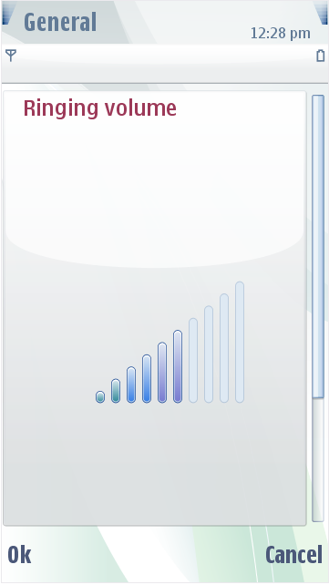
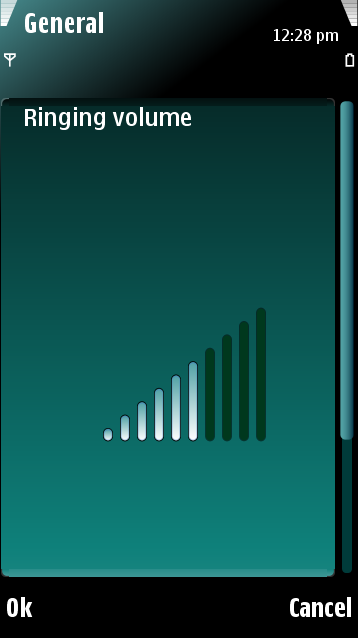

Volume Indicators
The volume level is displayed using a scale with ten levels. Levels are
indicated in the default user interface (UI) appearance with bar
graphics of varying height. These bars have on and off visual
representations. Volume levels are displayed using two different
layouts:
- Saved volume level indicator
shown in settings list
- Edited settings volume
Note:
Volume level images are
placed on top of a certain background, such as Navi Pane, Unfocused
list frame, and Focused list frame. To make them visible, check Areas.
The figure below illustrates default volume level indicators:
 
Figure:
Default S60 volume
indicators